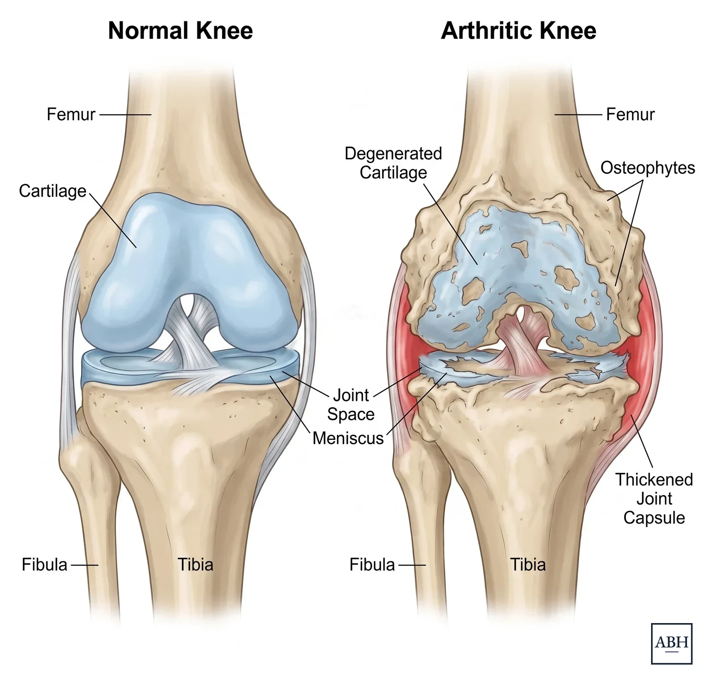

Patient Guide
Knee Arthritis: Symptoms, Causes and Treatment
What knee arthritis is, how it is diagnosed, how it is treated, and when to consider a knee replacement.
Andrew B. Harris, MD · Last reviewed October 2026
What knee arthritis is, how it is diagnosed, how it is treated, and when to consider a knee replacement.
Andrew B. Harris, MD · Last reviewed October 2026
Knee arthritis is the loss of the smooth cartilage that covers the ends of the thigh bone and shin bone and the back of the kneecap. As the cartilage thins, the surfaces roughen, extra bone forms around the edges, and the joint swells, stiffens and hurts. It often starts in one part of the knee before it spreads, and it generally comes on slowly, over years.6
Osteoarthritis is the most common kind of knee arthritis, but not the only one.
The signs you may need a knee replacement guide covers the symptoms in more detail, including what it means when a knee gives way, locks or catches.
Osteoarthritis is wear of the cartilage over time, and it is by far the most common kind. Age, genetics and body weight all play a part. The knee carries more load than most other joints, which is one reason it is among the joints most often replaced.6
An old injury is a common reason for arthritis in a younger knee. A torn meniscus or a torn ligament changes how the knee carries load, and a fracture that runs into the joint surface leaves it uneven. Roughly half of patients with a serious ligament or meniscus injury develop arthritis in that knee within ten to twenty years.4
Alignment plays a part too. A bow-legged knee loads the inside compartment and a knock-kneed knee loads the outside one, so arthritis often starts and stays on one side of the joint, and a knee that is already out of line tends to progress faster.5
Other kinds of arthritis reach the knee by different routes. Inflammatory arthritis, such as rheumatoid or psoriatic arthritis, damages the joint through inflammation of its lining and often affects both knees. Osteonecrosis is loss of blood supply to a portion of the bone, usually on the inside of the knee, and it often causes sudden pain in a knee that had been fine.6
Knee arthritis is generally diagnosed from the history, the examination and standing X-rays of the knee. Standing films show the joint under load, which is when the space between the bones narrows, and they show which part of the knee is involved. MRI is usually not needed, although it has a role when osteonecrosis is suspected or when the diagnosis is unclear.
Knee pain can also come from the hip, so the hip is generally examined as part of a knee visit.

A normal knee on the left and an arthritic knee on the right. The joint space narrows as the cartilage wears, bone spurs form at the edges, and the surfaces roughen.
Knee arthritis generally progresses, but the pace varies a great deal. Some knees change little over many years, and others go from mild to severe within a few. There is no reliable way to predict which course an individual knee will take, although a knee that is out of line tends to move faster than one that is straight.5
X-rays also do not predict how much a knee hurts. Across studies, many people with knee pain have little arthritis on their X-ray, and many people with clear arthritis on the X-ray have little pain.3 Treatment is based on the symptoms and how much the knee limits what you do. The X-ray is only one part of that picture.
Most knee arthritis is treated without surgery, often for years. The treatments below are generally used in combination, and the right mix varies from patient to patient. The guidelines behind them are the AAOS knee guideline and the American College of Rheumatology guideline.
Both guidelines put regular exercise first.1,2 A stronger thigh takes load off a worn knee, and in many patients that means less pain. Exercise does not regrow cartilage. Cycling, pool exercise and walking on level ground are generally well tolerated. Deep squats and long flights of stairs are the activities most patients learn to limit. A physical therapist can set up a program and progress it.
A cane held in the hand opposite the painful knee takes load off the joint with every step. The American College of Rheumatology guideline recommends one for anyone whose knee pain is affecting how they walk.2
Each step puts several times body weight through the knee, so losing weight reduces pain in many patients who are carrying extra, and it lowers the risk of complications if surgery happens later.1,2
An unloader brace shifts load away from the worn side of the knee. For arthritis confined to one compartment it helps some patients, and the AAOS guideline lists it as an option.1 It does nothing for arthritis across the whole knee.
Anti-inflammatory medication (NSAIDs) is the first medication both guidelines recommend.1,2 Long daily use carries risks to the stomach, kidneys and heart, so the usual approach is the lowest dose that works, and some medical conditions rule it out, so check with your physician first. Acetaminophen suits some patients and is generally weaker for arthritis pain. Opioids are not recommended for arthritis pain.2
Knee injections are given in the office without image guidance, so they are used more often in the knee than in the hip. A steroid injection can give short-term relief.1,2 An injection is generally followed by a wait of about three months before a knee replacement, to lower the risk of infection.
Gel injections (hyaluronic acid) give less reliable results than steroid injections, but may possibly be used, especially in patients who are adamant about avoiding surgery.1,2
Glucosamine, chondroitin and similar supplements, and insoles and similar devices, are not proven to help in current research and guidelines, though some patients do find individual benefit and the risk is low.1,2
The alternatives to hip and knee replacement guide covers each of these in more detail, and PRP and stem cell injections as well.
A knee replacement is rarely something a patient strictly “needs”. It is an elective operation, and there is no point at which it becomes mandatory. The right time is when the knee limits your life, non-surgical treatment is no longer enough, and you decide you are ready. How long you wait is largely up to you.
Some problems are treated sooner: certain fractures, osteonecrosis with collapse of the bone, or infection. Your surgeon will tell you if one applies.
Which operation fits depends on how much of the knee is worn. Arthritis confined to one compartment can sometimes be treated with a partial knee replacement, arthritis under the kneecap alone with a patellofemoral joint replacement, and arthritis across the whole knee with a total knee replacement. The signs you may need a knee replacement guide covers the decision in more detail, including when it is too early and whether it is possible to wait too long.
No. Worn cartilage does not grow back, and nothing available restores it. What treatment can do is lower the pain and keep the knee working, and many patients get years out of exercise, weight control, medication and the occasional injection. A knee replacement is the option when those stop being enough. Which of these fits you depends on your knee and your goals, so discuss it with an orthopaedic surgeon.
Generally no. Walking is part of the treatment, and in most patients it does not speed up the wear. Pain or swelling after a long walk is common and usually settles by the next day. When it does not, or when the same distance sets it off every time, mention it to your surgeon; a cane, a softer surface or different shoes often helps.
The lining of the joint makes extra fluid in response to the worn surfaces, and the swelling is often worse after a long day or a lot of stairs. Swelling on its own is part of knee arthritis. Swelling that comes with a hot, red knee or a fever is a different problem and should be seen promptly.
Both are used, for different things. Ice after activity helps a knee that has swollen. Heat before activity helps a knee that is stiff. Neither changes the arthritis, so use whichever makes the knee feel better, although a knee that is hot and swollen without a reason should be checked by a physician.
Partly. Osteoarthritis runs in families, and so does the alignment that loads one side of the knee. An old injury is as common a reason as any gene, and most of what you can do about it is the same whatever the cause.
Yes. Hip arthritis is sometimes felt at the knee, since the two joints share some of the same nerves, and some patients are seen for a knee before the hip turns out to be the cause. Pain that runs down the leg from the back can reach the knee as well. A knee with a normal X-ray and pain that has no clear explanation is a reason for your surgeon to examine the hip and the back.
No. Many patients with knee arthritis never have surgery. A knee replacement is considered when the knee limits your life, non-surgical treatment is no longer enough, and you are ready. Whether and when that happens is largely your decision, made with a surgeon who has examined the knee.
Yes, and when it happens there is usually a reason behind it: an old meniscus or ligament injury, a fracture that ran into the joint, alignment that loads one side of the knee, inflammatory arthritis or osteonecrosis. Finding the reason helps guide treatment, so a knee that hurts at that age should be evaluated by an orthopaedic surgeon.
General information for patients and clinicians, not a substitute for advice from your own surgeon.
The signs you may need a knee replacement guide covers the decision, and the alternatives guide covers treatment without surgery in depth.